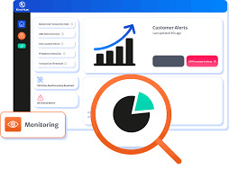
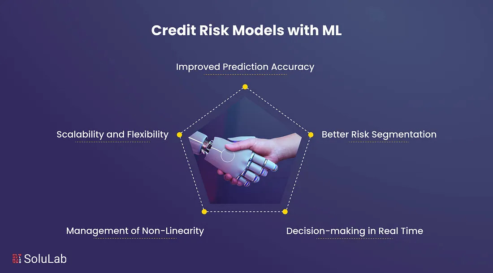

TECHNICAL SKILLS
Microsoft office, big data, financial modelling, risk management, business analysis, AI & machine learning, and python

Microsoft office, big data, financial modelling, risk management, business analysis, AI & machine learning, and python
This project presents an engaging training video on data protection within the fintech sector. It explains the importance of safeguarding sensitive information and breaks down key cybersecurity principles, including the CIA Triad (Confidentiality, Integrity, Availability). The video also covers Identity and Access Management (IAM), data breaches, secure data disposal, compliance, and ethical conduct. Additionally, it highlights vulnerabilities, exposures, and exploits, showing how risks arise and how they can be mitigated. Overall, the project demonstrates practical, real-world application of security concepts to strengthen data protection awareness in today’s digital environment.

Completed six real-world Excel projects focused on data management, analysis, and visualization. I gained hands-on experience with data organization, formulas, charts, pivot tables, VLOOKUP, text functions, and data import/export. These projects strengthened analytical and presentation skills, applicable across Microsoft Excel and Google Sheets for business and financial use applications.

Completed a hands-on AML/KYC and Transaction Monitoring simulation mirroring real banking and fintech compliance workflows. Investigated alerts, analyzed transactional behavior, identified financial crime risks, and documented defensible decisions. Performed KYC, UBO, sanctions, PEP, and adverse media reviews, produced SAR/STR drafts, and used Excel/Sheets to detect patterns and reduce false positives.

This course provided a comprehensive, hands-on understanding of credit risk modeling and credit scoring using machine learning. I gained experience in data analysis, preprocessing, and feature selection while working with real-world credit datasets. I developed skills in building predictive models using logistic regression, random forest, and K-Nearest Neighbors, as well as evaluating performance through cross-validation, precision, and recall. Additionally, I learned how to interpret key financial indicators influencing credit scores and applied these insights to develop robust risk assessment systems. The course also enhanced my ability to deploy machine learning models using tools like Gradio, strengthening my practical data science and fintech capabilities.
Ontario, Canada